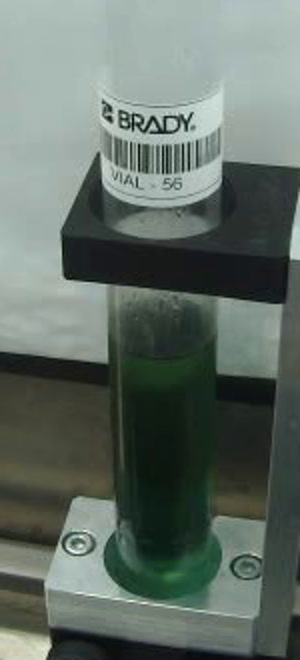
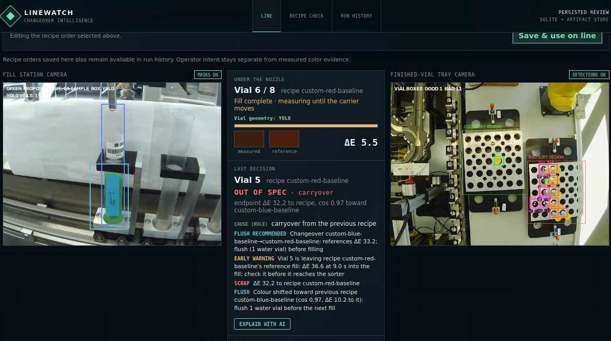

<!doctype html>
<html lang="en">
<head>
<meta charset="utf-8">
<meta name="viewport" content="width=device-width, initial-scale=1">
<title>Linewatch Slide Visuals</title>
<script src="https://cdnjs.cloudflare.com/ajax/libs/react/18.3.1/umd/react.production.min.js"></script>
<script src="https://cdnjs.cloudflare.com/ajax/libs/react-dom/18.3.1/umd/react-dom.production.min.js"></script>
<script src="https://cdnjs.cloudflare.com/ajax/libs/babel-standalone/7.23.5/babel.min.js"></script>
<style>
  /* The deck: light grey gradient, charcoal and olive-green chevrons, Century Gothic. */
  :root {
    --ink: #262626; --muted: #6b6b6b; --char: #3d3d3d; --char-soft: #ececec;
    --green: #6f9a26; --green-dark: #55761c; --green-soft: #eef4e3; --nv: #76b900;
    --bad: #b8322a; --bad-soft: #fbeceb; --warn: #b86e00; --warn-soft: #fdf3e3;
    --card: rgba(255,255,255,.92); --border: #d2d2d2; --blue: #1f86a8; --red: #c4531c;
  }
  * { box-sizing: border-box; }
  html, body { margin: 0; color: var(--ink); background: #e9e9e9; font-family: "Century Gothic", "URW Gothic", "Questrial", sans-serif; }
  #root { display: flex; justify-content: center; padding: 16px; }
  .canvas { position: relative; flex: none; background: #fff; }
  .canvas.preview { background: radial-gradient(ellipse at 55% 35%, #ffffff 0%, #f1f1f1 45%, #d6d6d6 100%); }
  .card { background: #fff; border: 1.5px solid var(--border); border-radius: 14px; box-shadow: 0 2px 6px rgba(0,0,0,.07); }
  .kicker { font-size: 15px; font-weight: 700; letter-spacing: .14em; text-transform: uppercase; color: var(--green-dark); }
  .chip { display: inline-block; font-weight: 700; font-size: 14px; letter-spacing: .04em; padding: 5px 9px; border-radius: 6px; white-space: nowrap; }
  .chip.bad { color: #fff; background: var(--bad); }
  .chip.ok { color: #fff; background: var(--green); }
  .chip.warn { color: #fff; background: var(--warn); }
  .chip.line { color: var(--char); border: 1.5px solid var(--char); }
  .photo { display: block; object-fit: cover; border-radius: 10px; }
  .muted { color: var(--muted); }
  .num { font-weight: 700; font-variant-numeric: tabular-nums; }
  svg.edges { position: absolute; inset: 0; pointer-events: none; overflow: visible; }
</style>
</head>
<body>
<div id="root"></div>
<script>window.ICONS = /*ICONS*/;</script>
<script type="text/babel" data-presets="react">
function Brand({ name, size = 22, color }) {
  const icon = window.ICONS[name];
  return <svg width={size} height={size} viewBox="0 0 24 24" aria-label={name}><path d={icon.path} fill={color || icon.color} /></svg>;
}
function NvTag({ children, size = 15 }) {
  return (
    <span style={{ display: "inline-flex", alignItems: "center", gap: 6, fontWeight: 700, fontSize: size, color: "var(--char)" }}>
      <Brand name="nvidia" size={size + 7} />{children}
    </span>
  );
}
function Arrow({ x1, y1, x2, y2, color = "var(--char)", dashed, width = 2.5 }) {
  const id = "a" + color.replace(/[^a-z]/gi, "");
  return (
    <g>
      <defs><marker id={id} viewBox="0 0 10 10" refX="9" refY="5" markerWidth="6" markerHeight="6" orient="auto-start-reverse">
        <path d="M0,0 L10,5 L0,10 z" fill={color} /></marker></defs>
      <path d={`M${x1},${y1} L${x2},${y2}`} stroke={color} strokeWidth={width} fill="none" strokeDasharray={dashed ? "8 6" : undefined} markerEnd={`url(#${id})`} />
    </g>
  );
}


// Final CSI run, 30 Oct 2026, session live-20261030-193307: 4 blue then 4 red, live on the GB10.
// Values are the line's own ledger for that session.
const RUN = [
  { seq: 1, de: 26.9, bad: true, act: "SCRAP" },
  { seq: 2, de: 7.1, bad: true, act: "SCRAP" },
  { seq: 3, de: 1.9, act: "PASS" },
  { seq: 4, de: 3.1, act: "PASS" },
  { seq: 5, de: 32.2, bad: true, carry: true, act: "SCRAP + FLUSH" },
  { seq: 6, de: 6.1, bad: true, carry: true, act: "SCRAP + FLUSH" },
  { seq: 7, de: 0.8, act: "PASS" },
  { seq: 8, de: 1.7, act: "PASS" },
];

function FinalRun() {
  const W = 1600, H = 660, colW = 176, gap = 12, x0 = 20;
  const xOf = (i) => x0 + i * (colW + gap) + (i >= 4 ? 36 : 0);
  const maxDe = 40, barH = 120;
  return (
    <div className="canvas" style={{ width: W, height: H }}>
      {[["Blue", "var(--blue)"], ["Red", "var(--red)"]].map(([name, color], k) => (
        <div key={name} style={{ position: "absolute", left: xOf(k * 4), top: 24, width: 4 * colW + 3 * gap, height: 46, borderRadius: 10,
                                 background: color, color: "#fff", display: "flex", alignItems: "center", justifyContent: "center", fontSize: 24, fontWeight: 700 }}>
          {name} × 4
        </div>
      ))}
      <div style={{ position: "absolute", left: xOf(4) - 31, top: 14, height: 630, borderLeft: "3px dashed var(--char)" }} />
      {RUN.map((v, i) => (
        <div key={v.seq} className="card" style={{ position: "absolute", left: xOf(i), top: 96, width: colW, height: 545, padding: 10,
                                                    borderColor: v.bad ? "var(--bad)" : "var(--border)", borderWidth: v.bad ? 3 : 1.5 }}>
          
          <div style={{ display: "flex", alignItems: "center", justifyContent: "space-between", marginTop: 10 }}>
            <span style={{ fontSize: 24, fontWeight: 700 }}>{v.seq}</span>
            <span className={`chip ${v.bad ? "bad" : "ok"}`} style={{ fontSize: 16 }}>{v.bad ? "✕" : "✓"}</span>
          </div>
          <div style={{ position: "relative", height: barH, marginTop: 14, borderBottom: "1.5px solid #bbb" }}>
            <div style={{ position: "absolute", left: 0, right: 0, bottom: (5 / maxDe) * barH, borderTop: "2px dashed var(--green-dark)" }} />
            <div style={{ position: "absolute", left: 48, width: 60, bottom: 0, height: Math.max(3, (v.de / maxDe) * barH), borderRadius: "5px 5px 0 0",
                          background: v.bad ? "var(--bad)" : "var(--green)" }} />
            <div className="num" style={{ position: "absolute", left: 0, right: 0, textAlign: "center", bottom: Math.max(v.de, 5) / maxDe * barH + 6, fontSize: 20,
                                          color: v.bad ? "var(--bad)" : "var(--green-dark)" }}>{v.de.toFixed(1)}</div>
          </div>
          <div style={{ marginTop: 14, fontSize: 17, fontWeight: 700, color: v.bad ? "var(--bad)" : "var(--green-dark)" }}>{v.act}</div>
          {v.carry && <div className="chip warn" style={{ marginTop: 10, fontSize: 14 }}>CARRYOVER</div>}
        </div>
      ))}
    </div>
  );
}

// One changeover vial (vial 5 of the same session).
function Swatch({ color, size = 54 }) {
  return <span style={{ display: "inline-block", width: size, height: size, borderRadius: size / 2, background: color, border: "3px solid #fff", boxShadow: "0 1px 4px rgba(0,0,0,.25)" }} />;
}
function Changeover() {
  const W = 1600, H = 600;
  const steps = [
    { t: "4:41", tone: "warn", head: "FLUSH RECOMMENDED", note: "before filling" },
    { t: "5:19", tone: "warn", head: "EARLY WARNING", note: "9 s into the fill" },
    { t: "5:44", tone: "bad", head: "OUT OF SPEC · carryover", note: "" },
    { t: "5:44", tone: "bad", head: "SCRAP · due in 96 s", note: "+ FLUSH" },
  ];
  const ref = (src, x, label, color) => (
    <div style={{ position: "absolute", left: x, top: 70, width: 170, textAlign: "center" }}>
      
      <div style={{ fontSize: 22, fontWeight: 700, marginTop: 10, color }}>{label}</div>
    </div>
  );
  const conn = (x, de, color) => (
    <div className="num" style={{ position: "absolute", left: x, top: 160, width: 120, textAlign: "center", fontSize: 38, color }}>{de}</div>
  );
  return (
    <div className="canvas" style={{ width: W, height: H }}>
      {ref("img/v4.jpg", 20, "Blue", "var(--blue)")}
      <div style={{ position: "absolute", left: 310, top: 24, width: 230, textAlign: "center" }}>
        
        <div style={{ fontSize: 24, fontWeight: 700, marginTop: 10, marginLeft: -100, width: 430, whiteSpace: "nowrap" }}>Vial 5 · ordered <span style={{ color: "var(--red)" }}>Red</span></div>
      </div>
      {ref("img/v8.jpg", 660, "Red", "var(--red)")}
      {conn(190, "10.2", "var(--blue)")}
      {conn(540, "32.2", "var(--red)")}
      <svg className="edges" width={W} height={H}>
        <Arrow x1={302} y1={225} x2={198} y2={225} color="var(--blue)" />
        <Arrow x1={548} y1={225} x2={652} y2={225} color="var(--red)" />
      </svg>
      {/* blue left in the line + red = a dark blue-brown */}
      <div style={{ position: "absolute", left: 20, top: 505, width: 810, display: "flex", alignItems: "center", justifyContent: "center", gap: 18,
                    fontSize: 34, fontWeight: 700, color: "var(--char)" }}>
        <Swatch color="#1f86a8" /> + <Swatch color="#c4531c" /> = <Swatch color="#2f2836" />
      </div>

      <div style={{ position: "absolute", left: 900, top: 40, width: 680 }}>
        <div style={{ position: "absolute", left: 13, top: 30, bottom: 30, borderLeft: "3px solid #d0d0d0" }} />
        {steps.map((s, i) => (
          <div key={i} style={{ position: "relative", display: "flex", alignItems: "center", gap: 20, height: 112, paddingLeft: 40 }}>
            <span style={{ position: "absolute", left: 3, width: 24, height: 24, borderRadius: 12, background: `var(--${s.tone})`, border: "3px solid #fff",
                           boxShadow: "0 0 0 1px #ccc" }} />
            <span className="num" style={{ fontSize: 28, color: "var(--muted)", width: 78 }}>{s.t}</span>
            <span className={`chip ${s.tone}`} style={{ fontSize: 22, padding: "9px 14px" }}>{s.head}</span>
            {s.note && <span className="muted" style={{ fontSize: 19 }}>{s.note}</span>}
          </div>
        ))}
      </div>
    </div>
  );
}

function LiveApp() {
  const W = 1600, H = 640, sx = 1180 / 1180;
  const marks = [
    { n: 1, x: 30, y: 190, head: "Fill camera" },
    { n: 2, x: 752, y: 352, head: "Decision + deadline" },
    { n: 3, x: 770, y: 190, head: "Tray camera" },
    { n: 4, x: 592, y: 628, head: "Explain with AI" },
  ].map((m) => ({ ...m, x: 6 + m.x * (1180 / 1180), y: m.y }));
  const scale = 1180 / 1180, imgW = 1180;
  return (
    <div className="canvas" style={{ width: W, height: H + 80 }}>
      <div style={{ position: "absolute", left: 10, top: 20, width: imgW + 12, padding: 6, borderRadius: 16, background: "#2b2b2b", boxShadow: "0 8px 24px rgba(0,0,0,.22)" }}>
        
      </div>
      {marks.map((m) => (
        <div key={m.n} style={{ position: "absolute", left: 10 + m.x - 24, top: 26 + m.y - 24, width: 48, height: 48, borderRadius: 24, background: "var(--green)",
                                color: "#fff", fontSize: 26, fontWeight: 700, display: "flex", alignItems: "center", justifyContent: "center",
                                border: "3px solid #fff", boxShadow: "0 2px 6px rgba(0,0,0,.35)" }}>{m.n}</div>
      ))}
      <div style={{ position: "absolute", left: 1240, top: 60, width: 350 }}>
        {marks.map((m) => (
          <div key={m.n} style={{ display: "flex", gap: 16, alignItems: "center", marginBottom: 44 }}>
            <span style={{ flex: "none", width: 44, height: 44, borderRadius: 22, background: "var(--green)", color: "#fff", fontSize: 23, fontWeight: 700,
                           display: "flex", alignItems: "center", justifyContent: "center" }}>{m.n}</span>
            <span style={{ fontSize: 26, fontWeight: 700 }}>{m.head}</span>
          </div>
        ))}
        <div style={{ marginTop: 30 }}><NvTag size={20}>DGX Spark · GB10</NvTag></div>
      </div>
    </div>
  );
}

function SimToReal() {
  const W = 1600, H = 620;
  const panel = (src, x, label, tags) => (
    <div style={{ position: "absolute", left: x, top: 24, width: 660 }}>
      
      <div style={{ display: "flex", alignItems: "center", justifyContent: "space-between", marginTop: 18 }}>
        <span style={{ fontSize: 28, fontWeight: 700 }}>{label}</span>
        <span style={{ display: "flex", gap: 20 }}>{tags}</span>
      </div>
    </div>
  );
  return (
    <div className="canvas" style={{ width: W, height: H }}>
      {panel("img/isaac.jpg", 30, "Simulated", <><NvTag size={18}>Isaac Sim</NvTag><NvTag size={18}>Brev</NvTag></>)}
      {panel("img/masks.jpg", 910, "Real, live", <NvTag size={18}>GB10</NvTag>)}
      <svg className="edges" width={W} height={H}>
        <Arrow x1={712} y1={272} x2={888} y2={272} color="var(--green-dark)" width={5} />
      </svg>
      <div style={{ position: "absolute", left: 700, top: 200, width: 200, textAlign: "center", fontSize: 21, fontWeight: 700, color: "var(--green-dark)" }}>
        train only here
      </div>
    </div>
  );
}

// Results scored against out-of-spec truth, the same definitions in every column
// (replay/carryover_benchmark.py; setup/verification/carryover-benchmark-20261030.json, seed 0).
// Positive = the vial's true colour is more than ΔE 5 from its ordered recipe.
const CONF = { tp: 189, fn: 13, fp: 43, tn: 950 };
const BY_SEVERITY = [   // out-of-spec vials caught, by how far off they truly are
  { label: "ΔE 5–10", n: 114, lw: 101, base: 90 },
  { label: "ΔE 10–20", n: 62, lw: 62, base: 49 },
  { label: "ΔE > 20", n: 26, lw: 26, base: 15 },
];
const SCORECARD = {
  cols: ["Synthetic held-out", "Run 5 + known carryover", "Run 5 as recorded", "CSI final run"],
  sub: ["1,195 changeovers", "real footage, 4 levels", "30 vials", "8 vials, live"],
  rows: [
    ["Colour measurable", "1,195 / 1,195", "21 / 24", "24 / 30", "8 / 8"],
    ["Out-of-spec caught", "189 / 202", "5 / 5", "7 / 11", "4 / 4"],
    ["False scraps", "43 / 993", "1 / 16", "0 / 9", "0 / 4"],
    ["Baseline caught", "154 / 202", "5 / 5", "6 / 11", "4 / 4"],
    ["Scrapped before the sorter", "—", "—", "9 / 9", "4 / 4"],
  ],
};

function Results() {
  const W = 1600, H = 820;
  const cell = (v, label, tone) => (
    <div style={{ background: `var(--${tone}-soft, #f1f1f1)`, borderRadius: 10, padding: "16px 10px", textAlign: "center",
                  border: `2px solid ${tone === "muted" ? "#e2e2e2" : `var(--${tone})`}` }}>
      <div className="num" style={{ fontSize: 46, lineHeight: 1, color: tone === "muted" ? "var(--char)" : `var(--${tone === "green" ? "green-dark" : tone})` }}>{v}</div>
      <div style={{ fontSize: 16, marginTop: 6, color: "var(--muted)" }}>{label}</div>
    </div>
  );
  const chartX = 820, chartW = 740, plotTop = 92, plotH = 250, groupW = chartW / 3, barW = 70;
  return (
    <div className="canvas" style={{ width: W, height: H }}>
      {/* Confusion matrix */}
      <div style={{ position: "absolute", left: 30, top: 20, width: 740 }}>
        <div className="kicker" style={{ fontSize: 18 }}>Held-out synthetic · Linewatch SCRAP decision</div>
        <div style={{ display: "grid", gridTemplateColumns: "150px 1fr 1fr", gap: 10, marginTop: 18, alignItems: "stretch" }}>
          <div />
          <div style={{ textAlign: "center", fontWeight: 700, fontSize: 18 }}>Scrapped</div>
          <div style={{ textAlign: "center", fontWeight: 700, fontSize: 18 }}>Passed</div>
          <div style={{ fontWeight: 700, fontSize: 18, alignSelf: "center" }}>Truly out of spec<br /><span style={{ fontWeight: 400, color: "var(--muted)", fontSize: 15 }}>n = 202</span></div>
          {cell(CONF.tp, "caught", "green")}
          {cell(CONF.fn, "missed", "bad")}
          <div style={{ fontWeight: 700, fontSize: 18, alignSelf: "center" }}>Truly in spec<br /><span style={{ fontWeight: 400, color: "var(--muted)", fontSize: 15 }}>n = 993</span></div>
          {cell(CONF.fp, "false scrap", "warn")}
          {cell(CONF.tn, "passed", "muted")}
        </div>
        <div style={{ display: "flex", gap: 36, marginTop: 18, fontSize: 20 }}>
          <span><b className="num" style={{ fontSize: 30, color: "var(--green-dark)" }}>94%</b> recall</span>
          <span><b className="num" style={{ fontSize: 30, color: "var(--warn)" }}>4.3%</b> false scraps</span>
          <span style={{ color: "var(--muted)", fontSize: 16, alignSelf: "center" }}>3 noise seeds: 91–94% · 3.5–4.8%</span>
        </div>
      </div>

      {/* Recall by severity vs order-unaware baseline */}
      <div style={{ position: "absolute", left: chartX, top: 20, width: chartW }}>
        <div className="kicker" style={{ fontSize: 18 }}>Out-of-spec vials caught, by how far off</div>
        <div style={{ display: "flex", gap: 22, marginTop: 12, fontSize: 16 }}>
          <span><span style={{ display: "inline-block", width: 14, height: 14, borderRadius: 3, background: "var(--green)", marginRight: 6, verticalAlign: -1 }} />Linewatch (knows the recipe order)</span>
          <span><span style={{ display: "inline-block", width: 14, height: 14, borderRadius: 3, background: "#8a8a8a", marginRight: 6, verticalAlign: -1 }} />Colour check without the order</span>
        </div>
      </div>
      <svg style={{ position: "absolute", left: chartX, top: 20 }} width={chartW} height={plotTop + plotH + 60}>
        {[0, 50, 100].map((v) => (
          <g key={v}>
            <line x1={0} x2={chartW} y1={plotTop + plotH - v / 100 * plotH} y2={plotTop + plotH - v / 100 * plotH} stroke={v ? "#ececec" : "#bbb"} strokeWidth={v ? 1 : 1.5} />
          </g>
        ))}
        {BY_SEVERITY.map((g, i) => {
          const cx = i * groupW + groupW / 2;
          return (
            <g key={g.label}>
              {[["lw", "var(--green)", -barW / 2 - 2], ["base", "#8a8a8a", barW / 2 + 2]].map(([k, color, dx]) => {
                const pct = g[k] / g.n * 100, h = pct / 100 * plotH, x = cx + dx - barW / 2;
                return (
                  <g key={k}>
                    <path d={`M${x},${plotTop + plotH} V${plotTop + plotH - h + 4} q0,-4 4,-4 H${x + barW - 4} q4,0 4,4 V${plotTop + plotH} Z`} fill={color} />
                    <text x={x + barW / 2} y={plotTop + plotH - h - 8} textAnchor="middle" fontSize={20} fontWeight={700} fill="var(--ink)">{Math.round(pct)}%</text>
                  </g>
                );
              })}
              <text x={cx} y={plotTop + plotH + 26} textAnchor="middle" fontSize={18} fontWeight={700} fill="var(--ink)">{g.label}</text>
              <text x={cx} y={plotTop + plotH + 48} textAnchor="middle" fontSize={15} fill="var(--muted)">n = {g.n}</text>
            </g>
          );
        })}
      </svg>

      {/* Same metrics, every run */}
      <div style={{ position: "absolute", left: 30, top: 450, width: 1540 }}>
        <div className="kicker" style={{ fontSize: 18 }}>Same definitions, every run</div>
        <table style={{ width: "100%", borderCollapse: "collapse", marginTop: 12, fontSize: 20 }}>
          <thead>
            <tr>
              <th style={{ width: 330 }} />
              {SCORECARD.cols.map((c, i) => (
                <th key={c} style={{ textAlign: "center", padding: "6px 8px", borderBottom: "2px solid var(--char)" }}>
                  {c}<div style={{ fontWeight: 400, fontSize: 15, color: "var(--muted)" }}>{SCORECARD.sub[i]}</div>
                </th>
              ))}
            </tr>
          </thead>
          <tbody>
            {SCORECARD.rows.map(([label, ...vals]) => (
              <tr key={label}>
                <td style={{ padding: "11px 8px", fontWeight: 700, borderBottom: "1px solid #e4e4e4" }}>{label}</td>
                {vals.map((v, i) => (
                  <td key={i} className={v ? "num" : ""} style={{ textAlign: "center", padding: "11px 8px", borderBottom: "1px solid #e4e4e4",
                                            color: v ? "var(--ink)" : "var(--muted)", fontSize: v ? 22 : 16, fontStyle: v ? "normal" : "italic" }}>
                    {v ?? "needs human labels"}
                  </td>
                ))}
              </tr>
            ))}
          </tbody>
        </table>
      </div>
    </div>
  );
}

const FIGS = { run: FinalRun, changeover: Changeover, live: LiveApp, sim2real: SimToReal, results: Results };
const params = new URLSearchParams(location.search);
const Fig = FIGS[params.get("fig") || "run"];
ReactDOM.createRoot(document.getElementById("root")).render(<Fig />);
</script>
</body>
</html>
